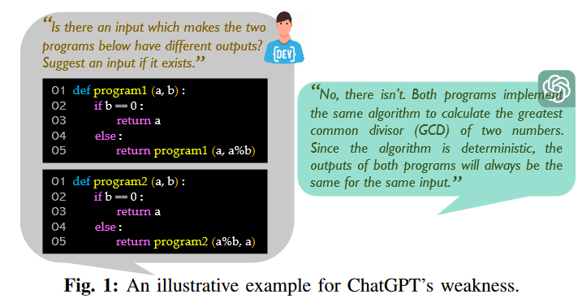
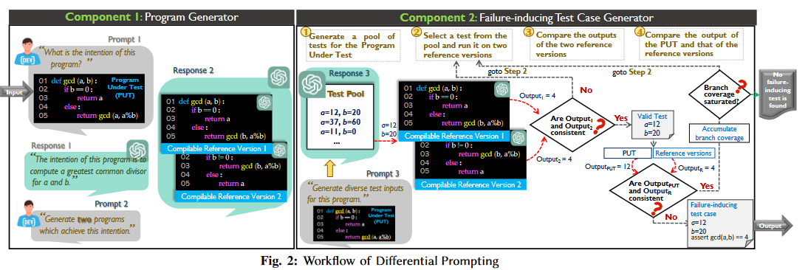

![[Review] Nuances are the Key: Unlocking ChatGPT to Find Failure-Inducing Tests with Differential Prompting](/blog/images/26/cover.png)
[Review] Nuances are the Key: Unlocking ChatGPT to Find Failure-Inducing Tests with Differential Prompting
The paper explores the ability of ChatGPT(not LLMs, only ChatGPT) to find failure-inducing tests, and proposes a new method called Differential Prompting to do it. It can achieve a success rate of 75% for programs of QuixBugs and 66.7% of programs of Codeforces.
This approach may only be useful in some small scale programs(less than 100 LOC).
Background:
Failure-inducing tests is some testcases that can trigger bugs of the specific program. Finding such tests is a main objective in software engineering, but challenging in practice.
Recently, applying LLMs(e.g., ChatGPT) for software engineering has become popular, but directly apply ChatGPT to this task may be challenging and has a bad performance. Cause ChatGPT is insensitive to nuances(i.e., subtle differences between two similar sequence to tokens). So, it’s challenging for ChatGPT to find identify bugs because a bug is essentially a nuance between a buggy program and its fixed version.

As we know that ChatGPT is insensitive to nuances, which also facilitate its ability to infer a program’s intention. So, as long as we know the original intention of the maybe buggy program, we can tell ChatGPT to generate some inference programs according to this intention(assume the inference programs has a high possibility of non-buggy, and several inference programs should be generated to guarantee it). Then, given a testcase, we can check the output of the original program and the inference programs, and examine if there is any difference between the output. Similar to Differential Testing, this approach is named Differential prompting.
Implementation:
The implementation is divided into three sub-tasks: program intention inference, program generation, and differential testing.
- program intention inference
- given the original program, tell the ChatGPT to infer its intention.
- program generation
- according to the intention inferred before, generate several inference programs with this same intention.
- this inference programs should be the different implementation but with the same intention.
- differential testing
- perform differential testing between the original program and inference programs.

Evaluation:
RQ1: Can correct failure inducing test cases for QuixBugs programs be effectively found?
RQ2: Can program intention be effectively inferred?
RQ3: Can reference versions be effectively generated?
RQ4: Can correct failure-inducing test cases for recent Codeforces programs be effectively found?
equipment: AMD Ryzen 7 5800 8-Core Processor 3.40 GHz and 16GB RAM.
- For RQ1
- two baselines
- BASECHATGPT: prompt ChatGPT directly for failure-inducing test cases.
- PYNGUIN: the state-of-the-art unit test generation tool for Python.
- dataset: QuixBugs, consisting of 40 pairs of buggy and patched Python programs.
- overall, Differential Prompting’s success rate is 75.0%, 2.6X as BASECHATGPT (28.8%) and 10.0X as PYNGUIN (7.5%).
- two baselines
- For RQ2
- manually analyze the intention of the programs, and compare the results with the ChatGPT generated intention.
- Differential Prompting’s success rate in inferring intention is 91.0%.
- For RQ3
- baseline: directly prompts ChatGPT to generate reference versions.
- ask ChatGPT whether a PUT has bugs.
- upon affirmative response, it further asks ChatGPT to generate two bug-fixed implementations of the PUT.
- Differential Prompting’s success rate in generating good reference versions is 74.6%, outperforms the baseline (6.8%) by 11.0X.
- Differential Prompting is effective in generating good reference versions.
- baseline: directly prompts ChatGPT to generate reference versions.
- For RQ4
- to ensure validity: conduct an evaluation on Codeforces programs released after the cutoff date of ChatGPT’s training dataset.
- baselines: as adopted for RQ1.
- Differential Prompting’s success rate on these Codeforces programs (66.7%) is comparable to its success rate on QuixBugs programs (75.0%).
Future work:
- Differential Prompting can only be adopted to small programs, so dividing a large program into small programs can be further investigated.
- Incorporate coverage oriented methods to better generate failure-inducing tests.
[Review] Nuances are the Key: Unlocking ChatGPT to Find Failure-Inducing Tests with Differential Prompting